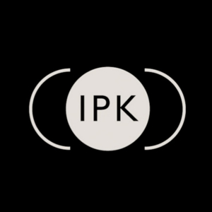

Description
- Administered 70+ in-person surveys and conducted 30+ field observations across 10+ NYC communities
- Collaborated with team members to track response rates and maintain accuracy and integrity of data for ongoing research
Jump to:
NYU'S Institute of Public KnowledgeJuly - August 2025
Description
Key Skills Highlighted

View more: Institute for Public Knowledge, New York University
Credit: Youtube